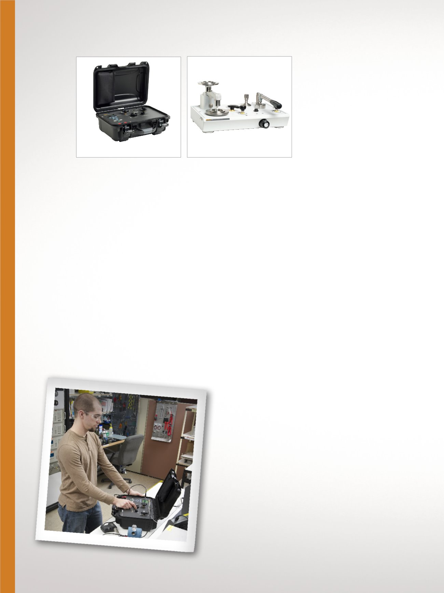

14
Druckkalibrierung
Präzisionsmanometer
Portable, qualitativ hochwer-
tige Überdruckaufnehmer
3130 Portabler
Druckkalibrator
Alles, was Sie für hochgenaue
Kalibrierungen von pneumatischen
Feldinstrumenten benötigen
•
Messen und Geben von Druck,
von –12 psi (0,8 bar) bis 2 MPa
(300 psi, 20 bar)
•
Genauigkeit von ±0,025 %,
Anzeige bis ±0,01 % FS
•
Arbeitet mit Druckluft oder
interner Pumpe
•
24 V Schleifenspannung
und elektrische Messung für
Transmitter und Schalter
•
Kompatibel mit Fluke
700P-Druckmodulen
•
NiMH-Akku
•
/C-Modelle enthalten
Kalibrierzertifikat
Druckwaagen für
Labor und Werkstatt
Bei Druckwaagen handelt es
sich um sehr genaue, robuste
und flexible Normale zur
Erzeugung von Druck, mit
deren Hilfe eine Vielzahl
von Instrumenten kalibriert
werden kann.
Einzelkolben-
Gasdruckwaage P3010
Hierbei handelt es sich um
eine qualitativ hochwertige
Gasdruckwaage mit hoher Leistung.
•
Genauigkeit 0,015 % vom
Messwert (0,008 % optional)
•
Bereichsabdeckung von Vakuum
mit –100 kPa (–15 psi) bis zu
einem Überdruck von 3,5 MPa
(500 psi)
•
Integrierte Druck-/Vakuum-
Pumpe bis 2 MPa
(300 psi) erhältlich
•
Kalibrierzertifikat aus
akkreditiertem Labor
P3010/P3020/P3030
3130
Doppelkolben-
Gasdruckwaage P3020
Die einzigartige Kolbenkonstruktion
ermöglicht die Kalibrierung von
Vakuum und Überdruck mit einem
einzelnen Instrument.
•
Genauigkeit 0,015 % vom
Messwert (0,008 % optional)
•
Bereiche von 1,5 kPa
(5 in H
2
O) bis 3,5 MPa (500 psi)
•
Alle Modelle bieten eine
Vakuummessung bis -100
kPa (–15 psi)
•
Integrierte Vakuum-/Druckpumpe
bis 2 MPa (300 psi) erhältlich
•
Kalibrierzertifikat aus
akkreditiertem Labor
Hochdruck-
Gasdruckwaage P3030
Der innovative
flüssigkeitsgeschmierte Kolben
bietet geringe Druckabfallraten
und eine hohe Toleranz gegenüber
Verschmutzungen.
•
Genauigkeit 0,015 % vom
Messwert (0,008 % optional)
•
Bereiche von 100 kPa
(10 psi) bis 14 MPa (2000 psi)
•
Integrierte Feineinstellung
für den Druck
•
Kalibrierzertifikat aus
akkreditiertem Labor
Einzelkolben-
Öldruckwaage P3110
Qualitativ hochwertige,
benutzerfreundliche
Hochleistungs-Ölkalibrierung
•
Genauigkeit 0,015 % vom
Messwert (0,008 % optional)
•
Bereiche von 100 kPa (10 psi) bis
140 MPa (20.000 psi)
•
Standardmäßig mit integrierter
Druckerzeugung und -steuerung
•
Kalibrierzertifikat aus
akkreditiertem Labor